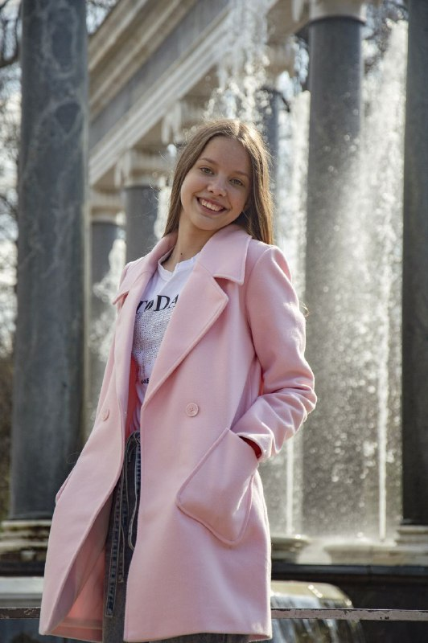
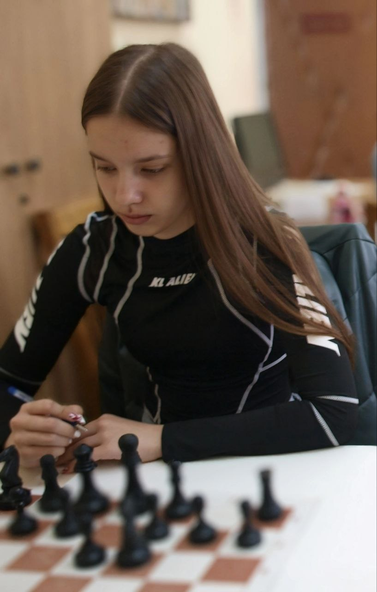

Сферы деятельности
Сфера деятельности включает учёбу, науку, работу, творчество, спорт, общественную деятельность, предпринимательство и изучение языков.

Обучение
Учёба очень важна, но не всегда интересна, и всё-таки приходится перебарывать себя и разбираться: если тема для меня интересна, то я готов тратить усилия.

Активизм
«Артек» — организация, которая помогла мне проявить себя, завести новые знакомства и научиться работать в команде.

Шахматы
Шахматы — неотъемлемая часть моей жизни: интеллектуальные игры не только увлекательны, но и полезны для развития логического мышления, а участие в турнирах позволяет сразиться с достойными соперниками и постоянно совершенствовать свои навыки.